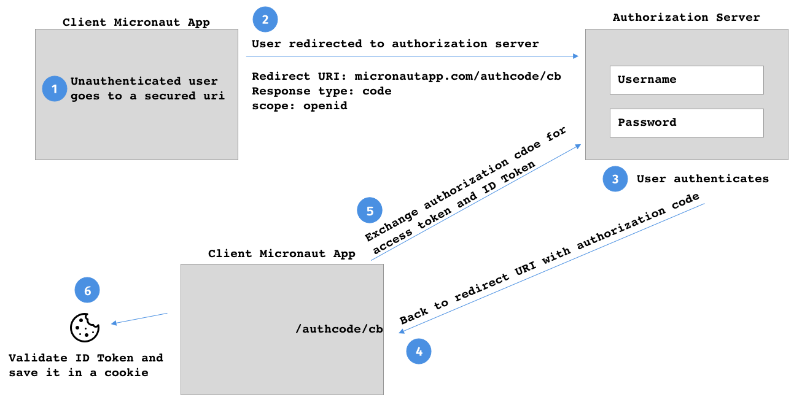
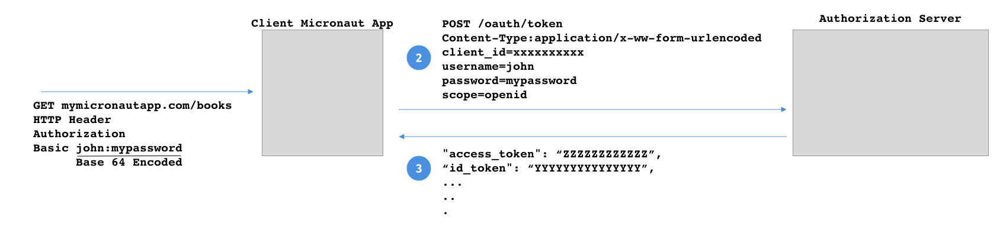

micronaut:
security:
enabled: true (1)
oauth2:
client-secret: '${OAUTH_CLIENT_SECRET}' (2)
client-id: '${OAUTH_CLIENT_ID}' (3)
openid-configuration: '${OKTA_DOMAIN}/oauth2/${OKTA_AUTHSERVERID}/.well-known/ openid-configuration' (4)
token:
jwt:
enabled: true (5)
cookie:
enabled: true (6)7 Flows
Version: 1.0.0.BUILD-SNAPSHOT
Table of Contents
7 Flows
7.1 OpenID Connect Authorization code Flow
The following configuration illustrates a possible set up to use authorization code flow with Micronaut and a third-party OpenID Configuration authorization server.
src/main/resources/application.yml
| 1 | Enable security |
| 2 | Client Secret. Your authorization server provider provides this value. |
| 3 | Client ID. Your authorization server provider provides this value. |
| 4 | well-know openid-configuration endpoint url. Allows micronaut to discover the configuration of the Open ID Configuration server. |
| 5 | Often, ID Token will be responded as JWT tokens. You will need to enable Micronaut’s JWT support to validate it. |
| 6 | Once, validated you may want to save the JWT IDToken in a cookie. To read in subsequent requests, enable Cookie Token Reader. |

7.1.1 Authorization Code Controller
The AuthorizationCodeController controller handles the response from the Authorization endpoint and it can be configured:
| Property | Type | Description |
|---|---|---|
|
boolean |
Sets whether the {@link AuthorizationCodeController} is enabled. Default value ({@value #DEFAULT_ENABLED}). |
|
java.lang.String |
if the callback endpoint is /authcode/cb controller path will be /authcode. Default value ({@value #DEFAULT_CONTROLLERPATH}). |
|
java.lang.String |
if the callback endpoint is /authcode/cb controller action path will be /cb . Default value ({@value #DEFAULT_ACTIONPATH}). |
7.1.2 ID Token Validator
Assuming the ID Token is a JWT token, the DefaultIdTokenAccessTokenResponseValidator validates the JWT Claims against every bean of type GenericJwtClaimsValidator and IdTokenClaimsValidator.
Some GenericJwtClaimsValidator are already registered:
Some IdTokenClaimsValidator are already registered: and:
Please, validate your IDToken as described in the ID Token Validation section.
Remember to enable JWT support micronaut.security.token.jwt.enabled=true.
7.1.3 Failure Handler
If the validation of the IdTokenAccessTokenResponse, an object which encapsulates the response of the token endpoint, fails a InvalidIdTokenAccessTokenResponseException is raised.
Read Error Handling section in the documentation to handle the exception according to your needs.
7.1.4 Successful ID Token Handler
Once the authentication has been validated, it is to time handle the ID Token. Provide a bean of type: SuccessfulIdTokenAccessTokenResponseHandler
7.1.5 Cookie Successful ID Token Handler
By default, CookieSuccessfulIdTokenAccessTokenResponseHandler is provided which can be configured with:
| Property | Type | Description |
|---|---|---|
|
java.lang.String |
Cookie Name. Default value (JWT). |
|
java.lang.String |
Sets the domain name of this Cookie. Default value (JWT). |
|
java.lang.String |
Sets the path of the cookie. Default value ({@value #DEFAULT_COOKIEPATH}). |
|
java.lang.String |
Sets the login success target URL. Default value ({@value #DEFAULT_LOGINSUCCESSTARGETURL}). |
|
java.lang.Boolean |
Whether the Cookie can only be accessed via HTTP. Default value ({@value #DEFAULT_HTTPONLY}). |
|
java.lang.Boolean |
Sets whether the cookie is secured. Default value ({@value #DEFAULT_SECURE}). |
|
java.time.temporal.TemporalAmount |
Sets the maximum age of the cookie. |
|
boolean |
Enables CookieSuccessfulIdTokenAccessTokenResponseHandler. Default value ({@value #DEFAULT_ENABLED}). |
7.2 Password Grant Type
The Password grant is one of the simplest OAuth grants and involves only one step: the application presents a traditional username and password login form to collect the user’s credentials and makes a POST request to the server to exchange the password for an access token
For example, the next image illustrates a Basic auth authentication which does a remote grant type pasword authentication:

You can enable an implementation of Authentication Provider to authenticate using Grant type password.
micronaut:
security:
oauth2:
client-secret: '${OAUTH_CLIENT_SECRET}'
client-id: '${OAUTH_CLIENT_ID}'
grant-type-password:
enabled: true| Property | Type | Description |
|---|---|---|
|
boolean |
Sets whether the {@link GrantTypePasswordRequestProvider} is enabled. Default value ({@value #DEFAULT_ENABLED}). |
|
The Content-Type used to communicate with the token endpoint. |
|
|
java.util.List |
OAuth 2.0 scopes. |